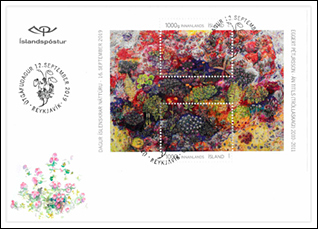
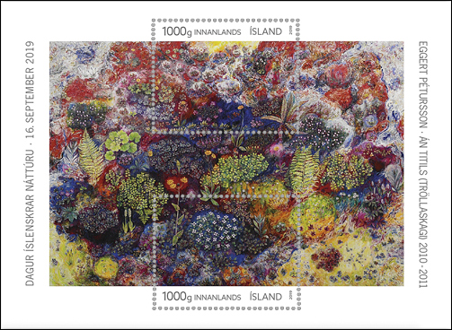
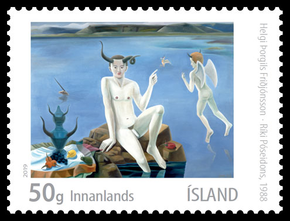

"Iceland Post recently announced the decision to stop servicing postage stamp collectors due to heavy losses in recent years. The service, which has mainly been used by stamp collectors all over the world, will stop in 2020, RÚV reports. (...) The publication will be continued through next year, and maybe a little bit into 2021, to finish prior plans. (...)
Iceland Post’s exclusive right to distribute letters is void at the end of 2019. The company is now working on finalizing a service agreement with Icelandic authorities. Directors at Iceland Post state they are willing to continue publishing stamps if authorities consider stamps culturally
important. They state, however, that the state will have to cover costs if the publication is to continue."

Iceland and its people have been to a great extent shaped by the forces of nature. Icelanders have adapted to the interaction of fire and ice, weather and tides. They have also enjoyed the all-embracing presence of natural beauty and earned their livelihood from the abundant gifts of nature. Icelandic Nature Day is celebrated on September 16th each year. Schools, institutions and associations are urged to commemorate the day, and the Minister for the Environment hands out awards and grants to deserving individuals and societies.
The motif of the miniature sheet is artist Eggert Pétursson’s painting of the rich vegetation in Tröllaskagi peninsula in northern Iceland. Eggert’s art is devoted to the Icelandic plant world and illustrates the minute and evanescent character of nature in which he finds inspiration for his painting. The Tröllaskagi headlands are among the snowiest regions in Iceland, yet rich with the diverse flora that has inspired many of Eggert’s paintings. The miniature sheet features the outlines of a part of the peninsula and more than 70 plant species, all painted in actual size. The painting shows the vegetation as it grows, from the plants high up in the mountains down the slopes to sea level.

Eggert Pétursson (b. 1956) studied at the Icelandic College of Art and Crafts and the Jan van Eyck Academie in Holland. His works have been exhibited widely. In 2007, Reykjavík Art Museum – Kjarvalsstaðir held an exhibition of his paintings and in 2016 there was a large exhibition of his works in the Pori Art Museum in Finland. The painting featured on the stamp belongs to the Saastamoinen Foundation and is a part of a permanent exhibition housed by the EMMA-Museum in Espoo, Finland.
Day of issue 12.09.2019
Designer Hlynur Ólafsson / Painting Eggert Pétursson
Number per sheet: 2
Printer: Cartor Security Printing
Size: 38 x 30,6 mm (x2)
Printing process: Offset Litho
Price: ISK 1100
Print run: 15,000 sheets . Source.
Icelandic art X – New expressionism of the eighties
What will we loose if the Iceland Post will "stop servicing postage stamp collectors due to heavy losses in recent years?." Here is an example of a recent "masterpiece" that could be endangered in the future:

"In 1983 local painting of this ilk spawned not one but two large group exhibitions in Reykjavik a few months apart. The Reykjavik Art Museum featured works that showed mostly the influence of recent Italian, German or American painters, for instance the aggressive canvases of Jón Axel (1956), with their compendium of religious ecstasy, sex and extreme psychological straits." Source.
In my opinion, the name of the issue, "Icelandic art X", perfectly describes what is this painting about.
|
Created: Aug. 25, 2019.Revised:
Jan.14, 2020
. Copyright © 2019 - 2020 by Victor Manta, Switzerland / USA. All rights reserved worldwide. |
|
|